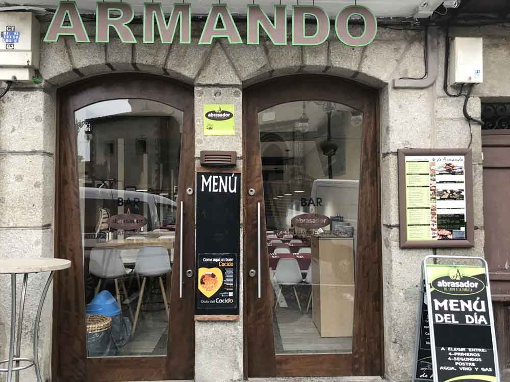
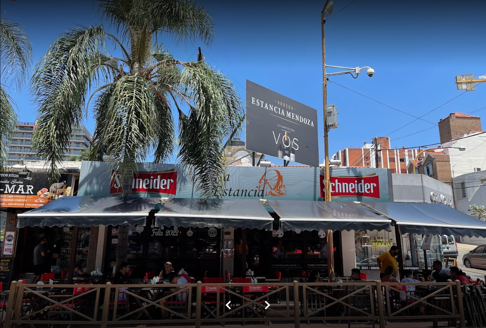
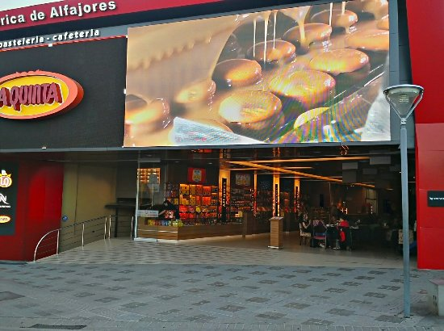
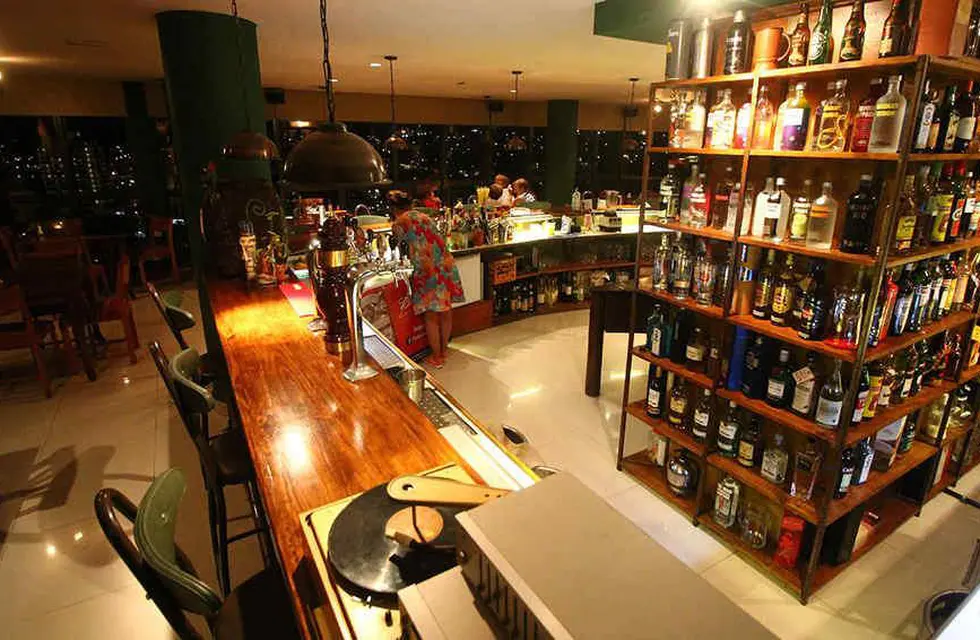

El 10 de diciembre de 1997 VILLAPAZ abrió sus puertas y con el paso del tiempo se convirtió en un espacio gastronómico tradicional de Villa Carlos Paz. 
Armando Restaurante
Basados en una tradición familiar que nos impulsa, traemos la mejor gastronomía, al centro de la ciudad. Somos creadores de sabores exquisitos, especializados en mariscos.

La Estancia
Para sentirte como en casa, nada mejor que ir a La Estancia, otro de los mejores restaurantes de Córdoba para ir con amigos. Tiene una decoración vintage que hace que el ambiente sea de lo más relajado y agradable. En la carta encontrarás desde pizzas hasta platos más elaborados, cada uno más rico que el otro, pero lo que no te podés perder en este restaurante son los cocktails que sirven, son “de autor”, muy originales. Te quedarás con las ganas de más 
Cafetería de Alfajores La Quinta
Con un ambiente excelente y a sólo metros del Reloj Cucú que resulta ideal para desayunar, merendar y compartir un momento en familia. 
Clover Up Irish Pub
Un establecimiento que cuenta con cocina gourmet y una de las vistas más espectaculares de Villa Carlos Paz.